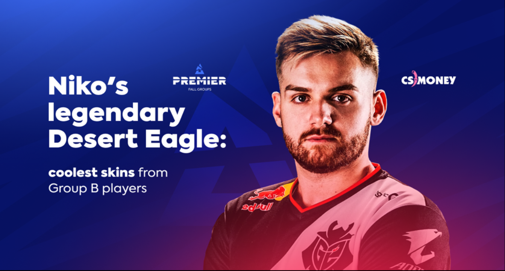

Niko is one of the best rifler in the world. In the ranking of HLTV, among all the sniper of the team that have the most chances and economy, Niko was once in top2. His highlight is replayed for tens millions of times by his fans. He also win the last biggest tournament as a member in G2 E-sport, to end his CS: GO journey.
